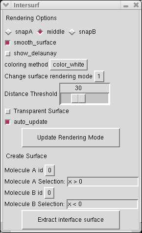

Intersurf options are all accessible in the main windows:
Extract an interface
Define groups of atoms by their molecule ids and a "VMD selection".
Then just press "Extract interface surface". Using "all" as selection
will give an interface between the two molecules (A and B), and using
the same molecule id with differant selection ("resid < 5" and
"resid > 4" for example) will give an interface inside the molecule.
Changing rendering options
Graphic options affects the current interface choosed in "Change
current rendering mode" and the next interfaces to be created. If
"auto_update" is activated the modified settings directly affects the
surface (expet for "distance threshold") else, the "Update rendering
mode" button must be pushed.
- snapA, middle and snapB determines where to
place the interface: glued to the first selection, in the middle of the
two selections or glued to the second selection.
- smooth surface is an option that makes the surface less sharpy
- show delaunay shows the relations between nearest atoms around the surface.
- Coloring method set the function that will be used to add color to the surface (see Coloring to change it)
- Distance threshold
is the maximal distance between the groups of atoms. Notice that
"auto_update" is not enabled for this option since the scroll will
update for all intermediary values.
- Transparent surface is usefull to see both side of the interface.